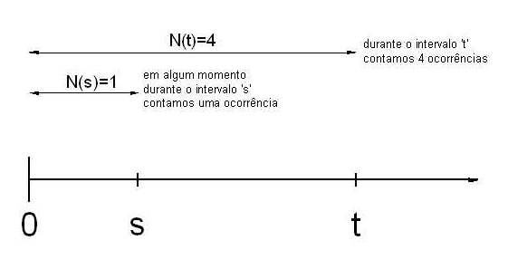
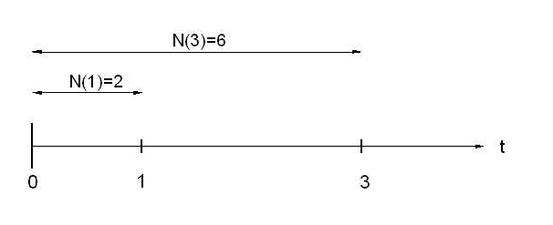
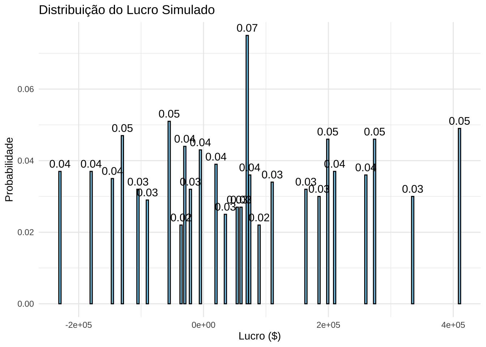
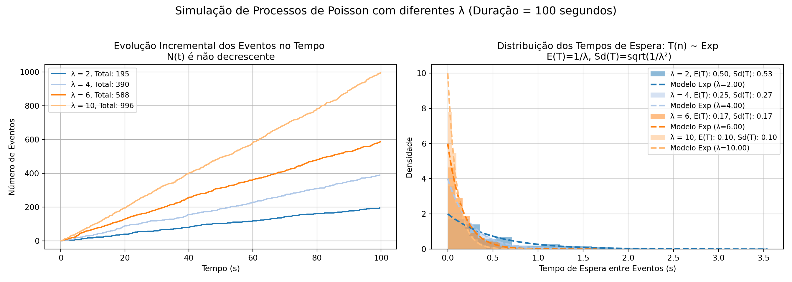
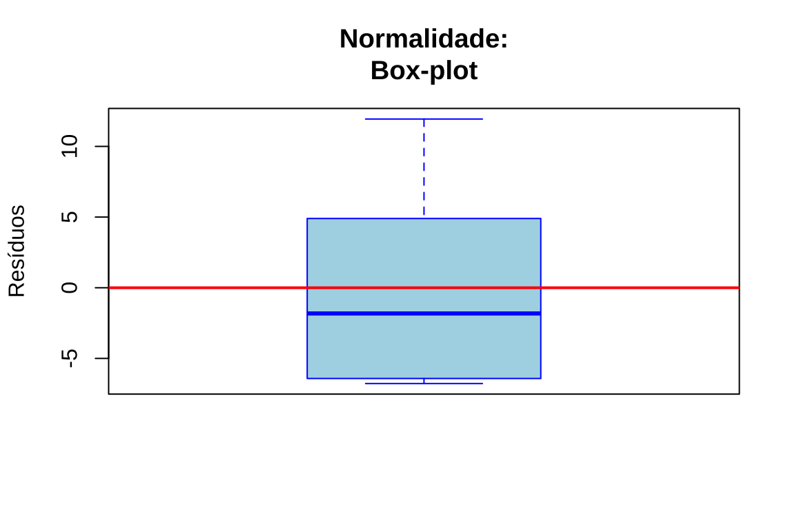

Capítulo 13 Introdução à modelagem de processos estocásticos
A expressão processo estocástico pode ser interpretada de duas formas diferentes, todavia interligadas, dependendo do contexto.
Como fenômeno real que ocorre no mundo físico ou social como o tempo de chegada de clientes em um banco, as variações no preço de uma ação ou a propagação de uma epidemia. Esses fenômenos apresentam variabilidade inerente e são influenciados por fatores que não podem ser totalmente controlados ou previstos.
Como um modelo (abstração do fenômeno): usado para descrever, aproximar e analisar esse fenômeno aleatório. Um processo de Poisson pode ser utilizado para modelar a chegada de clientes em um restaurante. Nesse caso, ele é definido como uma família de variáveis aleatórias indexadas por um conjunto de parâmetros (tempo, no exemplo).
13.1 Modelos determinísticos e estocásticos
Os modelos estocásticos contrastam com os modelos determinísticos. Enquanto os modelos determinísticos são definidos por equações que descrevem exatamente como o sistema evolui ao longo do tempo, os modelos estocásticos envolvem pelo menos algum grau de aleatoriedade. Assim, diferentes execuções de um processo estocástico produzem resultados variados, conhecidos como realizações do processo.
Modelos determinísticos são geralmente mais fáceis de analisar, mas os estocásticos costumam ser mais realistas. Por exemplo, ao modelar a sobrevivência de uma espécie rara, um modelo determinístico prevê extinção ou sobrevivência com certeza. Já um modelo estocástico atribui uma probabilidade de extinção, permitindo estudar como diferentes estratégias de manejo influenciam esse resultado.
13.2 Dedução e indução
Uma dicotomia relativamente recente (Hammersly e Handscom em Monte Carlo Methods, 1964) contrasta o matemático teórico com o matemático experimental (semelhantes às usadas comumente para físicos teóricos e experimentais)
Elas são independentes do fato de os objetivos serem puros ou aplicados. Não pressupõem que o teórico esteja sentado em uma sala vazia diante de uma folha de papel em branco, enquanto o experimentalista manipule equipamentos caros em um laboratório.
Embora certos experimentos matemáticos complexos exijam computadores eletrônicos, outros requerem apenas papel e lápis.
A diferença essencial é que os teóricos deduzem conclusões a partir de postulados, enquanto os experimentalistas inferem conclusões com base em observações. Trata-se da diferença entre dedução e indução.
13.3 Processos estocásticos temporais, espaciais e espaçotemporais
Como um modelo, um processo estocástico é uma família de variáveis aleatórias \(\{X_\theta\}\), indexada por um parâmetro \(\theta\), onde \(\theta\) pertence a algum conjunto de índices \(\Theta\) e a natureza do processo estocástico pode ser temporal, espacial ou espaçotemporal.
13.3.1 Processos Estocásticos Temporais
Em um processo estocástico temporal o parâmetro de índice (\(\Theta\)) representa o tempo: \(\{X_t : t \in T \}\).
Se \(\Theta\) for um conjunto de números inteiros, representando pontos específicos no tempo como no \(1^{o}s\) ou no \(3^{o}s\), teremos um processo estocástico em tempo discreto e a notação mais utilizada é:
\[ \{X_t : t \in \mathbb{Z}_{+}\} \]
Se \(\Theta\) for a reta real (ou algum intervalo da reta real) como um intervalo contínuo de tempo como em \(0.1s\) ou em \(3s\), teremos um processo estocástico em tempo contínuo e a notação mais utilizada é:
\[ \{X_t : t \in [0, \infty] \} \]
13.3.2 Processos Estocásticos Espaciais
Em um processo espacial, o conjunto de índices \(\Theta\) não representa mais o tempo, mas sim localizações no espaço e passa a ser representado por um vetor, descrevendo posições em um espaço de uma ou mais dimensões. Esse tipo de processo é frequentemente representado por:
\[ \{X_{\mathbf{s}} : \mathbf{s} \in D \} \]
em que:
- \(X_{s}\): Variável aleatória associada ao ponto espacial representado por \(s\).
- \(s\): Vetor de coordenadas espaciais, por exemplo, \((u, v)\) no caso de um plano ou \((u, v, z)\) no espaço.
- \(D\): Domínio espacial, que pode ser um subconjunto de \(\mathbb{R}^2\) (no plano) ou \(\mathbb{R}^3\) (no espaço tridimensional).
Se o domínio espacial \(D\) for discreto, representando pontos específicos no espaço (ex.: coordenadas de uma grade regular em um mapa), teremos:
\[ \{X_{\mathbf{s}} : \mathbf{s} \in \mathbb{Z}^2 \} \]
Se o domínio espacial \(D\) for contínuo, representando qualquer ponto em uma região do espaço (ex.: temperatura em qualquer ponto de uma superfície contínua), teremos:
\[ \{X_{\mathbf{s}} : \mathbf{s} \in \mathbb{R}^2 \} \]
13.3.3 Processos Estocásticos Espaçotemporais
Em alguns casos, podemos ter processos que evoluem no tempo e no espaço simultaneamente. Estes são chamados de processos espaço-temporais, frequentemente representados por::
\[ \{X_{t, \mathbf{s}} : t \in T, \mathbf{s} \in D \} \]
em que:
- \(X_{t, \mathbf{s}}\): Variável aleatória associada ao instante \(t\) na posição espacial \(\mathbf{s}\).
- \(t\): Índice temporal.
- \(\mathbf{s}\): Índice espacial (vetor de coordenadas no espaço).
- \(T\): Intervalo de tempo de interesse.
- \(D\): Região espacial de interesse.
O domínio espacial (\(D\)) pode ser discreto (ex.: pontos específicos em uma grade regular, \(\mathbb{Z}^2\)) ou contínuo (ex.: qualquer ponto em uma superfície, \(\mathbb{R}^2\)).
Da mesma forma, o domínio temporal (\(T\)) pode ser discreto (ex.: momentos específicos, \(\mathbb{Z}\)) ou contínuo (ex.: qualquer instante ao longo de um intervalo, \(\mathbb{R}\)).
13.4 Processo de Poisson
13.4.1 Natureza
Alguns experimentos aleatórios envolvem, essencialmente, contagens observadas em um certo intervalo de tempo como, por exemplo:
1- clientes que entram num supermercado por dia, 2- chamadas que uma central telefônica recebe por hora,
3. pacotes que passam por um roteador por minuto,
4. chamadas ao SIATE por semana,
5. trens que chegam a uma estação a cada 12 horas.
Ao se aumentar o intervalo, aumenta-se a probabilidade de se observar uma certa contagem.
Definição 1: um processo de contagem é um processo estocástico temporal representado por: \[ \{N_t : t \in [0, \infty) \} \] em que: \(N_t\) representa o número de eventos ocorridos no intervalo [0, t].
Esse processo deve satisfazer as seguintes propriedades:
- \(N_0 = 0\) (no exato momento do início do processo a contagem é zero)
- \(N_t \in \{0, 1, 2, \ldots \}\) (\(ie\), são contagens)
- Se \(s < t\), então \(N_s \leq N_t\) (a contagem no intervalo [0,s] não é superior à contagem no intervalo [0,t], para \(s < t\))
- Para \(s < t\), a diferença \(N_t - N_s\) representa o número de eventos ocorridos no intervalo \((s, t]\)
- \(N_t\) é uma função não descrescente
Definição 2: um processo de contagem tem incrementos independentes se o número de eventos que ocorrem em intervalos de tempo disjuntos são independentes. Para \(0 \leq t_1 < t_2 < \ldots < t_n\), temos que as variáveis aleatórias: \[ N(t_2) - N(t_1), N(t_3) - N(t_2), \ldots, N(t_n) - N(t_{n-1}) \] são variáveis independentes.
Definição 3: um processo de contagem tem incrementos estacionários se a distribuição de probabilidade do número de eventos que ocorrem em qualquer intervalo é a mesma e depende apenas da duração do intervalo (a probabilidade de chegar um cliente entre 9 e 10 h é a mesma de chegar um cliente entre 15 e 16 h: \(P(N([9,10])=P(N([15,16])\)): falta de memória

Figure 13.1: O processo de Poisson: (1) tem contagem zero em t=0; (2) se s<t então N(s)<N(t); (4) N(t) é não descrescente e (4) os incrementos são independentes
Um processo de contagem \(\{N_t : t \geq 0 \}\) é dito ser um processo de Poisson com taxa \(\lambda > 0\) se:
- \(N(0) = 0\).
- o processo tem incrementos independentes e estacionários.
- o número de eventos em qualquer intervalo de comprimento \(t\) tem distribuição de Poisson com média \(\lambda t\).
Ou seja, para \(s, t \geq 0\)
\[ P(N(t + s) - N(s) = n) = \frac{e^{-\lambda t} (\lambda t)^n}{n!} \]
em que \(P(N(t + s) - N(s) = n)\) é a probabilidade de serem observados \(n\) eventos no intervalo de tempo \((t+s)-t=t\). Desse modo, para um intervalo de tempo \(t\), a probabilidade de serem observados \(n\) eventos é
\[ P(N(t) = n) = \frac{e^{-\lambda t} (\lambda t)^n}{n!} \]
Exemplo 1: Fregueses chegam a uma certa loja de acordo com um processo de Poisson com taxa \(\lambda = 4\) fregueses por hora. Admita que a loja abra às 9h e que que os fregueses não deixam a loja. Quais são as probabilidades de que: 1. um freguês chegue até às 9:30h
2. um total de 5 fregueses estejam na loja até às 11:30h?
A loja abre às 9 h então até as 9 h 30 min o primeiro intervalo de tempo será \(t_1 = 0.5\) horas e até as 11 h 30 min o segundo intervalode tempo será \(t_2 = 2.5\). A taxa média de chegadas por hora é \(\lambda = 4\).
O que se pede é a \(P[N(t_1)=1,N(t_2)=5]\).
Essa probabilidade é a mesma que \(P[N(t_1)=1 \cap N(t_2-t_1)=4]\) e, sendo os intervalos de tempo disjuntos, as probabilidades \(P[N(t_1)=1]\) e \(P[N(t_2 - t_1)=4]\) são independentes e podemos escrever:
\[\begin{align} P[N(t_1)=1 \cap N(t_2-t_1)=4] & = P[N(t_1)=1] \times P[N(t_2-t_1)=4] \\ & = \frac{\varepsilon^{-\lambda t_1} (\lambda t_1)^{n_1}}{n_1!} \times \frac{\varepsilon^{-\lambda (t_2-t_1)}[\lambda (t_2-t_1)]^{n_2}}{n_2!}\\ & = \frac{\varepsilon^{-(4\times 0.5)} (4 \times 0.5)^{1}}{1!} \times \frac{\varepsilon^{-(4 \times 2)} (4 \times 2)^{4}}{4!}\\ & = 2\varepsilon^{-2} \times 170.67\varepsilon^{-8}\\ & = 0.2707 \times 0.0573 \approx 0.0155 \end{align}\]
Um valor bastante baixo posto a taxa média \(\lambda\) de 4 clientes por hora indicar que se esperam 2 em meia hora (apenas 1 chegou) e 8 em duas horas (apenas 4 chegaram). Ambos os eventos: chegar 1 pessoa em meia hora e 4 pessoas em duas horas são raros.
Exemplo 2: Suponha que pacotes SMTP chegam a um servidor de e-mails de acordo com um processo de Poisson com frequência \(\lambda = 2\) pacotes por segundo. Seja \(N(t)\) o número de mensagens que chegam até o tempo \(t\). Quais são as probabilidades de que: 1. \(P(N(1) = 2)\): 2 pacotes em um intervalo de 1 segundo
2. \(P(N(1) = 2 \cap N(3) = 6)\): 2 pacotes em um intervalo de 1 segundo e 6 pacotes em um intervalo de 3 segundos 3. \(P(N(1) = 2 | N(3) = 6)\) 4. \(P(N(3) = 6 | N(1) = 2)\)
A primeira probabilidade é imediata:
\[\begin{align} P(N(1) = 2) & = \frac{e^{-2 \times 1} (2 \times 1)^2}{2!}\\ & = \frac{e^{-2} \cdot 4}{2} \\ & = 2 e^{-2} \approx 0.27 \end{align}\]
A segunda,recorrendo à mesma definição do exemplo anterior, será dada por:
\[\begin{align} P[N(1)=2 \cap N(3)=6] & = P[N(1)=2] \times P[N(2)=4] \\ & = \frac{\varepsilon^{-(2\times 1)} (2 \times 1)^{2}}{2!} \times \frac{\varepsilon^{-(2 \times 2)} (2 \times 2 )^{4}}{4!}\\ & = 0.2707 \times 0.1952 \approx 0.052 \end{align}\]
A terceira, recorrendo à probabilidade de dois eventos condicionado \(P(A|B)=\frac{P(A\cap B)}{P(B)}\), será dada por:
\[\begin{align} P(N(1) = 2 | N(3) = 6) & = \frac{P(N(1) = 2 \cap N(3) = 6)}{P(N(3) = 6)}\\ & = \frac{0.052}{P(N(3) = 6)}\\ & = \frac{0.052}{0.1606} \approx 0.32 \\ \end{align}\]
A quarta podemos entender que a probabilidade de N(3)=6 dado N(1) = 2, ilustrada a seguir:

Portanto, calcular \(P(N(3) = 6 | N(1) = 2)\) equivale a calcular a probabilidade de \(P(N(2)=4)\) (os incrementos são independentes em um processo de Poisson), dada por \(\frac{\varepsilon^{-(2\times 2)} (2 \times 2)^{4}}{4!} \approx 0.19\) .
13.4.2 Processo de Poisson com classificação de eventos
Seja \(\{N(t), t \geq 0\}\) um processo de Poisson com taxa \(\lambda\), que descreve o número de eventos ocorridos em um intervalo de tempo \([0, t]\). Admita que cada evento nesse processo possa ser classificado em dois tipos distintos (Tipo I e Tipo II):
- Cada evento tem probabilidade \(p\) de ser classificado como Tipo I.
- Cada evento tem probabilidade \(1-p\) de ser classificado como Tipo II.
Se a classificação de cada evento é independente das demais classificações e da ocorrência dos eventos, demonstra-se (Sheldon Ross, in Introduction to Probability Models, \(6^{a}\) ed., Cap. 5) que
- \(\{N_1(t), t \geq 0\}\): Número de eventos do Tipo I no intervalo \([0, t]\).
- \(\{N_2(t), t \geq 0\}\): Número de eventos do Tipo II no intervalo \([0, t]\),
e \(N(t) = N_1(t) + N_2(t)\).
Os processos \(\{N_1(t), t \geq 0\}\) e \(\{N_2(t), t \geq 0\}\) têm as seguintes propriedades:
1. Ambos são processos de Poisson com taxas:
- \(\lambda_1 = \lambda p\) para eventos do Tipo I.
- \(\lambda_2 = \lambda (1-p)\) para eventos do Tipo II.
2. Os dois processos são independentes.
\[ N_1(t) \sim \text{Poisson}(\lambda p), \quad N_2(t) \sim \text{Poisson}(\lambda (1-p)) \]
De modo geral, considere um processo de Poisson com taxa \(\lambda\). Cada evento pode ser classificado em n tipos diferentes com probabilidades:
\[ p_1, p_2, \ldots, p_n, \quad p_1 + p_2 + \cdots + p_n = 1 \]
Seja \(N_i(t)\) o número de eventos do tipo \(i\) até o tempo \(t\).Cada subprocesso segue uma distribuição de Poisson com taxa:
\[ N_i(t) \sim \text{Poisson}(p_i \lambda t) \]
Os subprocessos \(N_1(t), N_2(t), \ldots, N_n(t)\) são independentes entre si.
A ocorrência de um evento de um tipo não afeta a probabilidade de ocorrência de eventos de outro tipo.
Cada tipo de evento mantém suas próprias propriedades estatísticas e comportamentos, preservando a estrutura probabilística do processo original.
A proposição afirma que podemos decompor um processo de Poisson subprocessos independentes, onde cada subprocesso segue uma distribuição de Poisson ajustada pela probabilidade de classificação de cada evento.
Esse resultado é frequentemente utilizado em aplicações práticas, como: filas com diferentes tipos de clientes e sistemas de telecomunicações com pacotes de dados de diferentes tipos.
Exemplo 3: Clientes entram em uma loja de acordo com um processo de Poisson com taxa λ = 10 por hora. De forma independente, cada cliente compra alguma coisa com probabilidade 0.3 ou sai da loja sem comprar nada com probabilidade 0.7. Calcule a probabilidade de que durante a primeira hora 9 pessoas entrem na loja e, dentre essas 9 pessoas, 3 comprem alguma coisa e 6 não.
Considerando que \(N_0(t)\) e \(N_1(t)\) são processos de Poisson independentes com taxas \((1 − p)\lambda\) e \(p \lambda\), em que \(N_0(t)\) o número de clientes que não compram nada até o tempo \(t\) e \(N_1(t)\) o número de clientes que compram até o tempo \(t\), a probabilidade pedida é
\[ P(N_0(t=1)=6, N_1(t=1)=3)\]
em que \(N_0(t=1) \sim Poisson(\lambda_0=7)\) e \(N_1(t=1) \sim Poisson(\lambda_1=3)\).
\[\begin{align} P(N_0(t=1)=6 \land N_1(t=1)=3) & = P(N_0(t=1)=6) \times P(N_1(t=1)=3)\\ & = \frac{e^{-\lambda_0 t} (\lambda_0 t)^n_0}{n_0!} \times \frac{e^{-\lambda_1 t} (\lambda_1 t)^n_1}{n_1!} \\ & = \frac{e^{-7 \times 1}\dot(7 \times 1)^6}{6!} \times \frac{e^{-3 \times 1}\dot(3 \times 1)^3}{3!} \\ & \approx 0.1251 \times 0.2666 \\ & \approx 0.0333 \end{align}\]
13.4.4 Tempo de espera em um processo de Poisson
Seja \(\{N_t : t \geq 0 \}\) um processo de Poisson com taxa \(\lambda\):
- denota-se por \(T_{n}\) o tempo entre a \((n − 1)\) e a \(n-ésima\) ocorrência de eventos, sendo \(T_{1}\) o tempo até a primeira ocorrência
- a sequência \(T_{n}, n=1,2,...\) é a chamada sequência de tempos entre ocorrências (ou entre chagadas)
Proposição: \(T_{1},T_{2},...\) são variáveis aleatórias com distribuição exponencial de parâmetro \(\frac{1}{\lambda}\).
Figure 13.2: Os tempos de espera entre cada observação não são constantes.
import numpy as np
import matplotlib
matplotlib.use('Agg')
import matplotlib.pyplot as plt
from scipy.stats import expon
#A função **`generate_poisson_events`** simula um **Processo de Poisson**, gerando um número aleatório de eventos com taxa média `rate` em um intervalo de duração `time_duration`, retornando o número total de eventos, os tempos ordenados de ocorrência e os intervalos entre eventos consecutivos.
def generate_poisson_events(rate, time_duration):
num_events = np.random.poisson(rate * time_duration)
event_times = np.sort(np.random.uniform(0, time_duration, num_events))
inter_arrival_times = np.diff(event_times)
return num_events, event_times, inter_arrival_times
# A função **`plot_non_sequential_poisson`** visualiza um **Processo de Poisson**, exibindo em dois gráficos o tempo cumulativo dos eventos (em uma curva de passos) e o histograma dos intervalos entre eventos, destacando a distribuição exponencial dos tempos de espera, com taxa média `rate` e duração total `time_duration`.
def plot_non_sequential_poisson(num_events, event_times, inter_arrival_times, rate, time_duration):
fig, axs = plt.subplots(1, 2, figsize=(14, 5))
fig.suptitle(f'Simulação de um Processo de Poisson (λ = {rate}, Duração = {time_duration} segundos)\n', fontsize=14)
# Gráfico 1: Tempo dos Eventos
axs[0].step(event_times, np.arange(1, num_events + 1), where='post', color='blue')
axs[0].set_xlabel('Tempo (s)')
axs[0].set_ylabel('Número de Eventos')
axs[0].set_title(f'Evolução Incremental dos Eventos no Tempo\nN(t) é não descrescente\nTotal: {num_events} eventos\n', fontsize=12)
axs[0].grid(True)
# Gráfico 2: Histograma dos Tempos de Espera
axs[1].hist(inter_arrival_times, bins=20, density=True, color='green', alpha=0.5, label='Dados Empíricos')
axs[1].set_xlabel('Tempo de Espera entre Eventos (s)')
axs[1].set_ylabel('Densidade')
axs[1].set_title(
f'Distribuição dos Tempos de Espera entre Eventos\nE(T): {1/rate:.2f}, Sd(T): {np.std(inter_arrival_times):.2f}',
fontsize=12
)
axs[1].grid(True, alpha=0.5)
# Sobreposição da curva exponencial teórica
lambda_param = rate
x = np.linspace(0, max(inter_arrival_times), 100)
y = expon.pdf(x, scale=1/lambda_param)
axs[1].plot(x, y, 'r-', lw=2, label=f'Modelo Exponencial (λ={lambda_param:.2f})')
# Legenda
axs[1].legend()
# Ajustar espaçamento entre gráficos
plt.subplots_adjust(left=0.08, right=0.95, top=0.85, bottom=0.1, wspace=0.3)
# Ajustar layout final
plt.tight_layout()
plt.show()
# A função **`plot_sequential_poisson`** visualiza múltiplos **Processos de Poisson** com diferentes taxas `rate`, exibindo em dois gráficos a evolução cumulativa dos eventos no tempo e os histogramas dos intervalos entre eventos, destacando a distribuição exponencial dos tempos de espera para cada taxa ao longo de uma duração definida `time_duration`.
def plot_sequential_poisson(num_events_list, event_times_list, inter_arrival_times_list, rate, time_duration):
fig, axs = plt.subplots(1, 2, figsize=(14, 5))
fig.suptitle(f'Simulação de Processos de Poisson com diferentes λ (Duração = {time_duration} segundos)\n', fontsize=14)
# Gráfico 1: Tempo dos Eventos
axs[0].set_xlabel('Tempo (s)')
axs[0].set_ylabel('Número de Eventos')
axs[0].set_title(f'Evolução Incremental dos Eventos no Tempo \nN(t) é não decrescente', fontsize=12)
axs[0].grid(True)
# Gráfico 2: Histograma dos Tempos de Espera
axs[1].set_xlabel('Tempo de Espera entre Eventos (s)')
axs[1].set_ylabel('Densidade')
axs[1].set_title(f'Distribuição dos Tempos de Espera: T(n) ~ Exp\n E(T)=1/λ, Sd(T)=sqrt(1/λ²)', fontsize=12)
axs[1].grid(True, alpha=0.5)
color_palette = plt.get_cmap('tab20')
colors = [color_palette(i) for i in range(len(rate))]
for n, individual_rate in enumerate(rate):
num_events = num_events_list[n]
event_times = event_times_list[n]
inter_arrival_times = inter_arrival_times_list[n]
# Gráfico 1: Curva de passos para os tempos de chegada
axs[0].step(event_times, np.arange(1, num_events + 1), where='post', color=colors[n],
label=f'λ = {individual_rate}, Total: {num_events}')
# Gráfico 2: Histograma dos tempos entre eventos
axs[1].hist(inter_arrival_times, bins=20, density=True, color=colors[n], alpha=0.5,
label=f'λ = {individual_rate}, E(T): {1/individual_rate:.2f}, Sd(T): {np.std(inter_arrival_times):.2f}')
# Sobreposição da curva exponencial teórica
x = np.linspace(0, max(inter_arrival_times), 100)
y = expon.pdf(x, scale=1/individual_rate)
axs[1].plot(x, y, color=colors[n], lw=2, linestyle='--', label=f'Modelo Exp (λ={individual_rate:.2f})')
axs[0].legend(loc='upper left', fontsize=9)
axs[1].legend(loc='upper right', fontsize=9)
# Ajustar espaçamento entre gráficos
plt.subplots_adjust(left=0.08, right=0.95, top=0.85, bottom=0.1, wspace=0.3)
# Ajustar layout final
plt.tight_layout()
plt.show()
# A função **`poisson_simulation`** simula um ou vários **Processos de Poisson**, dependendo se `rate` é um valor único (int) ou uma lista de taxas, gerando tempos de ocorrência e intervalos entre eventos; além disso, visualiza os resultados por meio de gráficos que exibem a evolução temporal dos eventos e a distribuição dos tempos de espera ao longo de um intervalo definido por `time_duration`.
def poisson_simulation(rate, time_duration, show_visualization=True):
if isinstance(rate, int):
num_events, event_times, inter_arrival_times = generate_poisson_events(rate, time_duration)
if show_visualization:
fig = plt.figure(figsize=(14, 6)) # Aumentar tamanho da figura
plot_non_sequential_poisson(num_events, event_times, inter_arrival_times, rate, time_duration)
fig.set_tight_layout(True) # Ajuste automático do layout
else:
return num_events, event_times, inter_arrival_times
elif isinstance(rate, list):
num_events_list = []
event_times_list = []
inter_arrival_times_list = []
for individual_rate in rate:
num_events, event_times, inter_arrival_times = generate_poisson_events(individual_rate, time_duration)
num_events_list.append(num_events)
event_times_list.append(event_times)
inter_arrival_times_list.append(inter_arrival_times)
if show_visualization:
fig = plt.figure(figsize=(18, 8)) # Maior espaço para gráficos sequenciais
plot_sequential_poisson(num_events_list, event_times_list, inter_arrival_times_list, rate, time_duration)
fig.set_tight_layout(True) # Ajuste automático do layout
else:
return num_events_list, event_times_list, inter_arrival_times_list
Nas simulações a seguir confirma-se empiricamente que a evolução incremental da contagem de eventos ao longo do tempo (a variável aleatória \(N(t)\)) é crescente e a distribuição dos tempos de espera (a variável aleatória \(T(n)\) entre eventos segue um modelo exponencial com parametro 1/λ (código adaptado de link).


Exemplo 3: Em um sistema de atendimento telefônico, as chamadas chegam de acordo com um processo de Poisson com taxa média de chegada de λ=3 chamadas por minuto. Responda:
1) Qual é a probabilidade de que ocorram exatamente 2 chamadas em um intervalo de 1 minuto?
2) Qual a probabilidade do tempo entre chamadas ser menor que 20 segundos?
3) Sabendo que o sistema comporta sem interrupção o atendimento de até 6 chamadas por minuto, qual é a probabilidade do sistema apresentar falhas?
4) Sabendo que o sistema comporta sem interrupção o atendimento com um intervalo mínimo de 15 segundos entre elas, qual é a probabilidade do sistema apresentar falhas?
- A probabilidade de ocorrerem exatamente \(k = 2\) chamadas em 1 minuto é dada pela fórmula da distribuição de Poisson:
\[ P(N(t) = k) = \frac{(\lambda t)^k e^{-\lambda t}}{k!}\\ P(N(1) = 2) = \frac{(3 \cdot 1)^2 e^{-3}}{2!}\\ P(N(1) = 2) = \frac{9 e^{-3}}{2}\\ P(N(1) = 2) \approx \frac{9 \cdot 0.0498}{2} = 0.2241 \]
- A probabilidade de tempo entre chamadas ser menor que 20 segundos é
\[ P(T \leq t) = 1 - e^{-\lambda t}\\ P(T \leq 1/3) = 1 - e^{-3 \cdot \frac{1}{3}}\\ P(T \leq 1/3) \approx 1 - 0.3679 = 0.6321 \]
- Sabendo que o sistema comporta sem interrupção o atendimento de até 6 chamadas por minuto, a interrupção ocorrerá quando há mais de 6 chamadas no intervalo de 1 minuto, e a probabilidade disso ocorrer é
\[ P(N(1) > 6) = 1 - P(N \leq 6)\\ P(N(1) > 6 ) = 1- \sum_{k=0}^{6} \frac{3^k e^{-3}}{k!}\\ P(N(1) > 6 \approx 1- 0.967\\ P(N(1) > 6) \approx 0.033\\ \]
- Sabendo que o sistema comporta sem interrupção o atendimento com um intervalo mínimo de 15 segundos entre chamadas consecutivas, a interrupção ocorrerá quando o sistema receber cahamadas com um intervalo menor que 15 s e essa probabilidade será
\[ P(T \leq t) = 1 - e^{-\lambda t}\\ P(T \leq 0.25) = 1 - e^{-3 \cdot 0.25}\\ P(T \leq 0.25) = 1 - e^{-0.75}\\ P(T \leq 0.25) \approx 1 - 0.4724 \\ P(T \leq 0.25) \approx 0.5276 \]
Esses resultados ilustram que:
- É improvável que o sistema falhe devido a mais de 6 chamadas em 1 minuto.
- Há uma alta probabilidade de falha devido a intervalos muito curtos entre chamadas consecutivas.
13.4.5 Distribuição condicional dos tempos de chegada
Considere \(N(t), t \geq 0\) com taxa \(\lambda\). Sabendo-se a priori que um evento ocorreu exatamente no intervalo \((0, t]\), qual a distribuição do tempo até a ocorrência desse evento?
Ou seja, desejamos estimar a probabilidade do evento ter ocorrido em intervalo de tempo \(s\) dado que ocorreu um evento no intervalo \(t\), sendo \(s \leq t\)
\[ P(T_1 < s \mid N(t) = 1), \, s \leq t. \]
Pela hipótese de incrementos independentes e estacionários demonstra-se (Sheldon Ross, in Introduction to Probability Models, \(6^{a}\) ed., Cap. 5) que a distribuição é uniforme no intervalo \((0, t]\) e pode-se verificar que
\[ P(T_1 < s \mid N(t) = 1) = \frac{s}{t}, \, s \leq t. \]
Exemplo 4: Em um sistema de atendimento telefônico, as chamadas chegam de acordo com um processo de Poisson com taxa média de chegada de λ=3 chamadas por minuto. Dado que ocorreram 2 chamadas em 1 minuto, qual é a probabilidade de que o tempo de espera para a primeira chamada seja inferior a 20 segundos?
A probabilidade de que o tempo de espera para a primeira chamada seja inferior a \(s=\frac{1}{3} min\) dado que ocorreram 2 chamadas em \(t=1min\) segue uma distribuição uniforme
\[
P(T_1 < s \mid N(t) = 1) = \frac{s}{t}, \, s \leq t.\\
P(T_1 < \frac{1}{3} \mid N(t=1) = 1) = \frac{\frac{1}{3}}{1}\\
P(T_1 < \frac{1}{3} \mid N(t=1) = 1) \approx 0.0333
\]
Dado que ocorreram 2 chamadas em 1 minuto, a probabilidade de que a primeira chamada ocorra nos primeiros 20 segundos é de 1/3 (aproximadamente 33,33%).
13.5 Simulações Monte Carlo
13.5.1 Introdução
O Método de Monte Carlo, desenvolvido na década de 1940 por Stanislaw Ulam durante seu trabalho no Los Alamos National Laboratory, surgiu como uma ferramenta para simular processos probabilísticos (uma ideia semelhante já havia sido utilizada por Enrico Fermi no estudo da difusão de nêutrons, mas nunca foi publicada). John von Neumann aprimorou o método, implementando-o no ENIAC, o primeiro computador programável da história.
É uma técnica matemática computacional amplamente utilizada para modelar e analisar sistemas complexos, frequentemente caracterizados por elevadas variabilidade e incerteza, nos quais os cálculos analíticos diretos seriam inviáveis devido ao grande número de variáveis ou à complexidade matemática envolvida.
Baseiam-se na amostragem (ou geração) de valores aleatórios (estritamente falando, pseudoaleatórios), obtidos por algoritmos determinísticos - dentro de intervalos plausíveis para variáveis de entrada ie., suas distribuições de probabilidade específicas.
As distribuições de probabilidade podem ser determinadas por:
- dados de séries temporais;
- estimativas de especialistas;
- conhecimento prévio.
Cada simulação realizada gera um resultado e, ao serem repetidas um grande número de vezes, esses resultados agregados permitem a aproximação dos parâmetros da distribuição de probabilidade do fenômeno.
A geração de valores aleatórios confiáveis é essencial para que os resultados sejam estatisticamente robustos, garantindo que as simulações ofereçam estimativas precisas e representativas.
Aplicadas em áreas como finanças, engenharia, física e ciência de dados, permitindo a previsão de cenários, a análise de riscos e a otimização de decisões sob incerteza.
A CDF desempenha um papel importante nas Simulações Monte Carlo. A função de distribuição cumulativa (CDF) dá a probabilidade de que a variável aleatória seja menor ou igual a um valor específico.
13.5.2 Fundamentação
A Lei dos Grandes Números afirma que, à medida que o número de amostras aumenta, a média das observações converge para o valor esperado:
\[ \bar{X}_n = \frac{1}{n} \sum_{i=1}^{n} X_i \to \mathbb{E}[X] \text{ quando } n \to \infty \]
O Teorema do Limite Central afirma que, para um número suficientemente grande de amostras independentes e identicamente distribuídas (i.i.d), a soma das variáveis converge em distribuição a uma distribuição Normal:
\[ \frac{\sum_{i=1}^{n} X_i - n \mu}{\sqrt{n} \sigma} \xrightarrow{d} N(0,1) \]
em que:
- \(\mu\): média da variável aleatória
- \(\sigma\): desvio padrão
Esses teoremas garantem que métodos de Monte Carlo produzam aproximações confiáveis conforme se aumente o número de simulações.
13.5.3 Números Aleatórios e Pseudoaleatórios
Os números verdadeiramente aleatórios são gerados a partir de processos físicos imprevisíveis, como ruído térmico ou decaimento radioativo. Esses métodos são difíceis de implementar computacionalmente devido ao custo e à dificuldade de captura dos fenômenos físicos.
Os números pseudoaleatórios são gerados por algoritmos determinísticos que produzem sequências que se assemelham à aleatoriedade. Um dos métodos mais comuns é o Gerador Linear Congruente (Linear Congruential Generator – LCG), cuja fórmula matemática é dada por:
\[ X_{i+1} = (a X_i + c) \mod m \]
em que:
- \(X_i\): Valor atual da sequência
- \(a\): Multiplicador
- \(c\): Incremento
- \(m\): Módulo (resto)
- \(X_0\): Semente inicial
O módulo (\(m\)) é o valor pelo qual a expressão \((a X_i + c)\) é dividida, e o resto dessa divisão é o próximo número gerado na sequência. Considere como exemplo o LCG com parâmetros \(a=9\), \(c=1\), \(m=17\) e semente \(X_0=7\). O primeiro número aleatório (\(X_0=7\)) será
\[\begin{align} X_{0} & = 7 \\ X_{1} & = (a X_0 + c) \mod m X_{1} & = (9*7+1) \mod 17 \\ X_{1} & = 64 \mod 17 \\ X_{1} & = 13 \\ \end{align}\]
uma vez que \(\frac{64}{17} \approx 3,76\) e tomando-se \(64-(3*17)=13\). Assim \(X_{1} = 13\).
A sequência é então normalizada para o intervalo \([0, 1)\) fazendo-se
\[ U_i = \frac{X_{i+1}}{m} \]
No exemplo anterior teríamos:
\[\begin{align} U_i & = \frac{X_{i+1}}{m}\\ U_0 & = \frac{X_{1}}{m}\\ U_0 & = \frac{13}{17}\\ U_0 & = 0,76471\\ \end{align}\]
Essa normalização é essencial para aplicações que requerem números pseudoaleatórios no intervalo \([0, 1)\) como as CDF.
O método LCG é determinístico, ou seja, dada uma mesma semente inicial (\(X_0\)), ele produzirá sempre a mesma sequência. Isso pode ser problemático em contextos onde a imprevisibilidade é desejada.
O LCG a seguir foi adaptado de link):
from typing import Iterator, List
# Função correta do Gerador Linear Congruente (LCG)
def linear_congruential_generator(m: int, a: int, c: int, seed: int) -> Iterator[int]:
"""
Implementa o Gerador Linear Congruente (LCG) para gerar números pseudoaleatórios.
Parâmetros:
- m: Módulo (define o intervalo dos números gerados).
- a: Multiplicador (controla a dispersão dos números).
- c: Incremento.
- seed: Valor para iniciar a sequência.
Retorna:
- Um iterador que gera números inteiros pseudoaleatórios entre 0 e m-1.
"""
x = seed # Inicializa a sequência com a semente fornecida
while True:
yield x # Retorna o valor atual de x
x = (a * x + c) % m # Calcula o próximo valor na sequência usando a fórmula do LCG
# Função para gerar uma lista de números pseudoaleatórios
def generate_lcg_samples(n_samples: int, m: int, a: int, c: int, seed: int) -> List[int]:
"""
Gera uma lista de `n_samples` números pseudoaleatórios não normalizados usando o método do Gerador Linear Congruente (LCG).
Parâmetros:
- n_samples: Número de amostras a serem geradas.
- m: Módulo do LCG.
- a: Multiplicador do LCG.
- c: Incremento do LCG.
- seed: Semente inicial.
Retorna:
- Uma lista de números inteiros pseudoaleatórios entre 0 e m-1.
"""
gen = linear_congruential_generator(m, a, c, seed) # Inicializa o gerador corretamente
return [next(gen) for _ in range(n_samples)] # Coleta n_samples números
Gerando números pseudoaleatórios com valores \(m = 16\), \(a = 11\), \(c = 0\), \(seed=1\):
# Parâmetros do LCG com ciclo visível
m = 16 # Módulo pequeno para demonstrar a repetibilidade
a = 11 # Multiplicador
c = 0 # Incremento
seed = 1 # Semente inicial X0
n_samples = 200 # Número de amostras para observar o ciclo completo
# Gerar números com o LCG (não normalizados)
lcg_samples = generate_lcg_samples(n_samples, m, a, c, seed)
# Exibir os números gerados
# print(lcg_samples)
# Função para gerar uma sequência de números pseudoaleatórios normalizados no intervalo [0,1)
def lcg_normalized(n_samples: int, m: int, a: int, c: int, seed: int = 1) -> list[float]:
"""
Gera uma sequência de números pseudoaleatórios normalizados no intervalo [0,1)
usando o Gerador Linear Congruente (LCG).
Parâmetros:
- n_samples: Número de amostras a serem geradas.
- m: Módulo do LCG.
- a: Multiplicador do LCG.
- c: Incremento do LCG.
- seed: Valor para iniciar a sequência.
Retorna:
- Uma lista de números float no intervalo [0,1).
"""
gen = linear_congruential_generator(m, a, c, seed) # Inicializa o gerador LCG
sequence = [] # Lista para armazenar os números normalizados
# Gera os números pseudoaleatórios normalizados
for _ in range(n_samples):
rand: float = next(gen) / m # Normaliza o número gerado para o intervalo [0, 1)
sequence.append(rand) # Adiciona o número normalizado à sequência
return sequence # Retorna a lista completa de números normalizados
Gerando números pseudoaleatórios com valores \(m = 16\), \(a = 11\), \(c = 0\), \(seed=1\):
# Parâmetros do LCG com ciclo visível
m = 16 # Módulo pequeno para demonstrar a repetibilidade
a = 11 # Multiplicador
c = 0 # Incremento
seed = 1 # Semente inicial X0
n_samples = 100 # Número de amostras para observar o ciclo completo
# Gerar números com o LCG (normalizados)
lcg_samples_norm = lcg_normalized(n_samples, m, a, c, seed)
# Exibir os números gerados
#print(lcg_samples_norm)
A escolha arbitrária de \(m,a,c\) resulta em valores em um ciclo de repetibilidade previsível conforme os gráficos a seguir mostram:
import numpy as np
import matplotlib.pyplot as plt
# Criar índice para os pontos gerados
indices = np.arange(n_samples)
# Criar subplots lado a lado
fig, axes = plt.subplots(1, 2, figsize=(14, 5))
# Gráfico 1: Dispersão para observar padrão periódico
axes[0].scatter(indices, lcg_samples_norm, s=50, alpha=0.7, color='blue') # Corrigido: índices no eixo X
axes[0].set_title('Distribuição de Números Pseudoaleatórios \n(Ciclo Repetitivo)')
axes[0].set_xlabel('Índice da Sequência')
axes[0].set_ylabel('Números gerados (0 a 1)')
axes[0].grid(True)
# Gráfico 2: Barras para visualizar periodicidade
axes[1].bar(indices, lcg_samples_norm, color='gray', edgecolor='black')
axes[1].set_title('Gráfico de Barras \n(Ciclo Evidenciado)')
axes[1].set_xlabel('Índice da Sequência')
axes[1].set_ylabel('Números gerados (0 a 1)')
axes[1].grid(True)
# Ajustar layout para melhor visualização
plt.tight_layout()
plt.show()
De acordo com Donald Knuth (The Art Of Computer Programming), um gerador pseudoaleatório linear produz uma sequência aperiódica se as seguintes condições forem satisfeitas:
- Se \(p\) é um número primo que divide \(m\), então \(p\) deve dividir \(c\).
- Se \(m\) é múltiplo de 4, então \(a-1\) também deve ser múltiplo de 4.
- O único número inteiro que divide exatamente \(a\) e \(m\) deve ser 1 (ou seja, \(a\) e \(m\) devem ser coprimos).
Essas condições garantem um período máximo e uma boa distribuição dos números gerados.
Considerando os parâmetros escolhidos:
- \(m = 2^{31} = 2\,147\,483\,648\)
- \(a = 594\,156\,893\)
- \(c = 0\)
verificamos as três condições:
Se \(p\) é um número primo que divide \(m\), então \(p\) deve dividir \(c\). Como \(m = 2^{31}\), o único primo que o divide é \(p = 2\). Como \(c = 0\), \(p\) divide \(c\), satisfazendo a condição.
Se \(m\) é múltiplo de 4, então \(a-1\) também deve ser múltiplo de 4. Como \(m = 2^{31}\) é múltiplo de 4, verificamos se \(a - 1\) também é múltiplo de 4:
\[ a - 1 = 594\,156\,893 - 1 = 594\,156\,892 \]
Como \(594\,156\,892 \div 4\) é inteiro, a condição é satisfeita. O único número inteiro que divide exatamente \(a\) e \(m\) deve ser 1 (ou seja, \(a\) e \(m\) devem ser coprimos). Calculamos o máximo divisor comum \(\gcd(a, m)\), obtendo:
\[ \gcd(594\,156\,893, 2^{31}) = 1 \]
isso confirma que \(a\) e \(m\) são coprimos, atendendo à terceira condição.
Portanto, os parâmetros escolhidos atendem às condições de Knuth, garantindo que o gerador linear congruencial produzirá uma sequência aperiódica.
# Definição dos parâmetros em acordo com Knuth
m: int = 2_147_483_648 # Define o módulo (2^31), garantindo um grande período de números únicos
a: int = 594_156_893 # Define o multiplicador, cuidadosamente escolhido para evitar ciclos curtos
c: int = 0 # Incremento igual a zero, caracterizando um gerador multiplicativo
seed: int = 1 # Define o número inicial
n_samples: int = 200 # Número de amostras para observar o ciclo completo
# Gerar números com o LCG (normalizados)
lcg_samples_norm = lcg_normalized(n_samples, m, a, c, seed)
A escolha desses parãmetros resulta em valores em um ciclo de repetibilidade muito menos previsível conforme os gráficos a seguir mostram:
import numpy as np
import matplotlib.pyplot as plt
# Criar índice para os pontos gerados
indices = np.arange(n_samples)
# Criar subplots lado a lado
fig, axes = plt.subplots(1, 2, figsize=(14, 5))
# Gráfico 1: Dispersão para observar padrão periódico
axes[0].scatter(indices, lcg_samples_norm, s=50, alpha=0.7, color='blue') # Corrigido: índices no eixo X
axes[0].set_title('Distribuição de Números Pseudoaleatórios \n(Ciclo Repetitivo)')
axes[0].set_xlabel('Índice da Sequência')
axes[0].set_ylabel('Números gerados (0 a 1)')
axes[0].grid(True)
# Gráfico 2: Barras para visualizar periodicidade
axes[1].bar(indices, lcg_samples_norm, color='gray', edgecolor='black')
axes[1].set_title('Gráfico de Barras \n(Ciclo Evidenciado)')
axes[1].set_xlabel('Índice da Sequência')
axes[1].set_ylabel('Números gerados (0 a 1)')
axes[1].grid(True)
# Ajustar layout para melhor visualização
plt.tight_layout()
plt.show()
Números aleatórios numa faixa específica [a,b]
Para gerar números aleatórios em uma faixa diferente de 0 e 1 usando um gerador linear congruente, você deve ajustar os parâmetros de normalização. Especificamente, para obter números em um intervalo \([a, b]\), você deve multiplicar o número gerado (que está inicialmente entre 0 e 1) pela amplitude do intervalo \(b - a\) e, em seguida, somar o valor mínimo do intervalo a.
# Gerar números pseudoaleatórios normalizados no intervalo [0,1)
m: int = 2_147_483_648 # Define o módulo (2^31), garantindo um grande período de números únicos
a: int = 594_156_893 # Define o multiplicador, cuidadosamente escolhido para evitar ciclos curtos
c: int = 0 # Incremento igual a zero, caracterizando um gerador multiplicativo
seed: int = 1 # Define o número inicial
n_samples: int = 200 # Número de amostras para observar o ciclo completo
# Gerar números com o LCG (normalizados)
lcg_samples_norm = lcg_normalized(n_samples, m, a, c, seed)
# Faixa desejada
a_range = 1 # Novo limite inferior
b_range = 3 # Novo limite superior
# Transformar os números normalizados para a nova faixa [a_range, b_range]
lcg_samples_ab = [a_range + x * (b_range - a_range) for x in lcg_samples_norm]
# Criar índices para os pontos gerados
indices = np.arange(len(lcg_samples_norm))
indices_b = np.arange(len(lcg_samples_ab))
# Criar subplots lado a lado
fig, axes = plt.subplots(1, 2, figsize=(14, 5))
# Gráfico 1: Dispersão dos números em [0,1]
axes[0].scatter(indices, lcg_samples_norm, s=50, alpha=0.7, color='blue')
axes[0].set_title('Distribuição de Números Pseudoaleatórios em [0,1]')
axes[0].set_xlabel('Índice da Sequência')
axes[0].set_ylabel('Números gerados em [0,1]')
axes[0].grid(True)
# Gráfico 2: Dispersão dos números em [a_range,b_range]
axes[1].scatter(indices_b, lcg_samples_ab, s=50, alpha=0.7, color='blue')
axes[1].set_title('Distribuição de Números Pseudoaleatórios em [1,3]')
axes[1].set_xlabel('Índice da Sequência')
axes[1].set_ylabel('Números gerados em [1,3]')
axes[1].grid(True)
# Ajustar layout
plt.tight_layout()
plt.show()
13.5.4 Geração de amostras aleatórias de distribuições de probabilidade
Os números pseudoaleatórios gerados pelo LCG (\(U_{i})\) seguem uma distribuição uniforme no intervalo \([0,1]\). No entanto, muitos problemas exigem amostras de distribuições diferentes, como a Normal, Exponencial ou Poisson.
13.5.4.1 Método da Inversa da Função de distribuição Acumulada (CDF)
A geração de números aleatórios de uma distribuição de probabilidade qualquer pode ser feita por meio da inversa de sua função de distribuição acumulada (CDF).
Se \(F(x)\) é a CDF de uma variável aleatória \(X\), então:
\[ X = F^{-1}(U) \]
em que:
- \(U \sim U(0,1)\): é um número pseudoaleatório que segue uma distribuição uniforme
- \(F^{-1}\): função inversa da CDF da distribuição da variável aleatória \(X\)
Exemplo1: variável aleatória \(X\) que siga uma distribuição uniforme com parâmetros \(a,b\). Sua CDF é
\[ F(x)=\frac{x-a}{b-a} \]
Invertendo-se a CDF tem-se
\[ x=F^{-1}(p) = a + p.(b-1) \]
em que \(p\) é o valor da probabilidade no intervalo [0,1]. Como \(U \sim U(0,1)\) é um número pseudoaleatório uniforme
\[ F^{-1}(U) = a + U(b-a) \]
Se admitirmos valores \(a=2,b=3\), um valor aleatório \(x\) da variável aleatória \(X\) gerado a partir do número aleatório \(U=0.56\) será \(x=2+0.56*(3-2)=2.56\).
Exemplo 2: variável aleatória \(X\) que siga a distribuição exponencial com parâmetro \(\lambda\). Sua CDF é
\[ F(x) = 1 - e^{-\lambda x} \]
Invertendo-se a CDF tem-se
\[ x=F^{-1}(p) = -\frac{1}{\lambda} \ln(1 - p). \]
em que \(p\) é o valor da probabilidade no intervalo [0,1]. Como \(U \sim U(0,1)\) é um número pseudoaleatório uniforme
\[ F^{-1}(U) = -\frac{1}{\lambda} \ln(1 - U). \]
Se admitirmos um valor de \(\lambda=3\), um valor aleatório \(x\) da variável aleatória \(X\) gerado a partir do número aleatório \(U=0.56\) será \(x= -\frac{1}{3} \ln(1 - 0.56)=0.2729\).
Exemplo 3: variável aleatória \(X\) que siga uma distribuição Normal com parâmetros \(\mu, \sigma\). Sua CDF é
\[ F(x) = \frac{1}{\sqrt{2 \pi \sigma^2}} \int_{-\infty}^{x} e^{-\frac{(t - \mu)^2}{2 \sigma^2}} \, dt\\ \]
Essa função não possui uma inversa fechada em termos de funções elementares. Portanto, sua inversa é frequentemente aproximada numericamente ou expressa em termos da função de erro inversa (\(\operatorname{erf}^{-1}\)).
13.5.4.2 Quando \(F^{-1}(X)\) não possui uma inversa fechada
Método da Aceitação-Rejeição: usado para gerar amostras de uma distribuição-alvo quando a inversa da CDF não está disponível, utilizando uma distribuição auxiliar e uma função de aceitação para gerar amostras.
Método de Newton-Raphson: método numérico iterativo usado para para encontrar aproximações da inversa da CDF resolvendo a equação \(F(X)=U\).
13.5.5 Exemplo 1 (Goodwin e Wright, 2009)
Neste exemplo, analisamos as entradas (cash inflows) e saídas (cash outflows) de caixa de um sistema para se estimar Lucro = Cash inflows - Cash outflows.
Entradas de Caixa (Cash Inflows)
| Cash inflows ($) | Probabilidade | CDF |
|---|---|---|
| 50,000 | 0.30 | 0.3 |
| 60,000 | 0.40 | 0.7 |
| 70,000 | 0.30 | 1.0 |
- Probabilidade de 30% para entrada de caixa de 50,000
- Probabilidade de 40% para entrada de caixa de 60,000
- Probabilidade de 30% para entrada de caixa de 70,000
Saídas de Caixa (Cash Outflows)
| Cash outflows ($) | Probability (%) | CDF |
|---|---|---|
| 50,000 | 0.45 | 0.45 |
| 70,000 | 0.55 | 1.00 |
- Probabilidade de 45% para saída de caixa de 50,000.
- Probabilidade de 55% para saída de caixa de 70,000.
Admitindo-se que aos valores cash inflow sejam uma variável aleatória \(X\) com função distribuição de probabilidade:
\[ P(X = x) = \begin{cases} 0.30, & x = 50,000 \\ 0.40, & x = 60,000 \\ 0.30, & x = 70,000 \\ 0, & \text{outros valores} \end{cases} \]
e que que os valores cash outflow sejam uma variável aleatória \(Y\) com função distribuição de probabilidade:
\[ P(Y = y) = \begin{cases} 0.45, & y = 50,000 \\ 0.55, & y = 70,000 \\ 0, & \text{outros valores} \end{cases} \]
números aleatórios \(U,V\) podem ser gerados e mapeados para valores de cash inflow e cash outflow a partir desses distribuições, e o lucro calculado para cada par de valores.
Etapas da simulação
Passo 1: Gerar valores aleatórios uniformes \(U\)** no intervalo \([0,1]\) para representar Cash Inflows e \(V\)** no intervalo \([0,1]\) Cash Outflows.
Passo 2: Mapeamento para Cash Inflows
Para cada número aleatório \(U\):
- Se \(0 \leq U < 0.30\) → Cash Inflow = 50,000
- Se \(0.30 \leq U < 0.70\) → Cash Inflow = 60,000
- Se \(0.70 \leq U \leq 0.99\) → Cash Inflow = 70,000
Passo 3: Mapeamento para Cash Outflows
Para cada número aleatório \(V\):
- Se \(0 \leq V < 0.45\) → Cash Outflow = 50,000
- Se \(0.45 \leq V \leq 0.99\) → Cash Outflow = 70,000
Passo 4: Cálculo do Lucro
Para cada par de valores simulados:
\[ \text{Lucro} = \text{Cash Inflow} - \text{Cash Outflow} \]
Passo 5: Análise dos Resultados
- Calcule a média dos lucros obtidos.
- Visualize os resultados por meio de gráficos ou tabelas.
# Simulação de Monte Carlo para Fluxo de Caixa Usando U e V
# Parâmetros de Cash Inflows
cash_inflows <- c(50000, 60000, 70000)
prob_inflows <- c(0.30, 0.40, 0.30)
cdf_inflows <- cumsum(prob_inflows)
# Parâmetros de Cash Outflows
cash_outflows <- c(50000, 70000)
prob_outflows <- c(0.45, 0.55)
cdf_outflows <- cumsum(prob_outflows)
# Número de simulações
n_simulations <- 1000
# Geração de números aleatórios independentes para U (Inflows) e V (Outflows)
set.seed(123) # Garante reprodutibilidade
U <- runif(n_simulations) # Para Cash Inflows
V <- runif(n_simulations) # Para Cash Outflows
# Vetores para armazenar resultados
simulated_inflows <- numeric(n_simulations)
simulated_outflows <- numeric(n_simulations)
simulated_profit <- numeric(n_simulations)
# Mapeamento de U para Cash Inflows
for (i in 1:n_simulations) {
if (U[i] < cdf_inflows[1]) {
simulated_inflows[i] <- cash_inflows[1]
} else if (U[i] < cdf_inflows[2]) {
simulated_inflows[i] <- cash_inflows[2]
} else {
simulated_inflows[i] <- cash_inflows[3]
}
}
# Mapeamento de V para Cash Outflows
for (i in 1:n_simulations) {
if (V[i] < cdf_outflows[1]) {
simulated_outflows[i] <- cash_outflows[1]
} else {
simulated_outflows[i] <- cash_outflows[2]
}
}
# Cálculo do Lucro
simulated_profit <- simulated_inflows - simulated_outflows
# Tabela de resultados agregados
profit_table <- as.data.frame(table(simulated_profit))
profit_table$Probability <- as.numeric(profit_table$Freq) / n_simulations
# Gráfico com Probabilidades no Topo das Barras
library(ggplot2)
ggplot(profit_table, aes(x = as.numeric(as.character(simulated_profit)), y = Probability)) +
geom_bar(stat = "identity", fill = "skyblue", color = "black") +
geom_text(
aes(label = sprintf("%.2f", Probability)),
vjust = -0.5,
size = 4
) +
labs(
title = "Distribuição do Lucro Simulado",
x = "Lucro ($)",
y = "Probabilidade"
) +
theme_minimal()
13.5.6 Exemplo 2: The Elite Pottery Company (Goodwin e Wright, 2009)
Neste exemplo, analisamos os custos (Variable Costs), vendas (Sales) e custos fixos (Fixed Costs) de um sistema para estimar: \(Lucro = (Sales - Variable \, Costs) \times Sales - Fixed \, Costs\)
Custos Variáveis (Variable Costs)
| Variable Costs ($) | Probabilidade | CDF |
|---|---|---|
| 13 | 0.30 | 0.30 |
| 8 | 0.40 | 0.70 |
| 18 | 0.30 | 1.00 |
- Probabilidade de 30% para custo variável de 13
- Probabilidade de 40% para custo variável de 8
- Probabilidade de 30% para custo variável de 18
Vendas (Sales)
| Sales | Probabilidade | CDF |
|---|---|---|
| 22,000 | 0.30 | 0.30 |
| 10,000 | 0.40 | 0.70 |
| 30,000 | 0.30 | 1.00 |
- Probabilidade de 30% para vendas de 22,000
- Probabilidade de 40% para vendas de 10,000
- Probabilidade de 30% para vendas de 30,000
Custos Fixos (Fixed Costs)
| Fixed Costs ($) | Probabilidade | CDF |
|---|---|---|
| 175,000 | 0.30 | 0.30 |
| 100,000 | 0.40 | 0.70 |
| 300,000 | 0.30 | 1.00 |
- Probabilidade de 30% para custo fixo de 175,000
- Probabilidade de 40% para custo fixo de 100,000
- Probabilidade de 30% para custo fixo de 300,000
Admitindo-se que os valores Variable Costs sejam uma variável aleatória \(X\) com função distribuição de probabilidade:
\[ P(X = x) = \begin{cases} 0.30, & x = 13 \\ 0.40, & x = 8 \\ 0.30, & x = 18 \\ 0, & \text{outros valores} \end{cases} \]
E que os valores Sales sejam uma variável aleatória \(Y\) com função distribuição de probabilidade:
\[ P(Y = y) = \begin{cases} 0.30, & y = 22,000 \\ 0.40, & y = 10,000 \\ 0.30, & y = 30,000 \\ 0, & \text{outros valores} \end{cases} \]
E que os valores Fixed Costs sejam uma variável aleatória \(Z\) com função distribuição de probabilidade:
\[ P(Z = z) = \begin{cases} 0.30, & z = 175,000 \\ 0.40, & z = 100,000 \\ 0.30, & z = 300,000 \\ 0, & \text{outros valores} \end{cases} \]
Números aleatórios \(U, V, W\) podem ser gerados e mapeados para valores de Variable Costs, Sales e Fixed Costs a partir dessas distribuições, e o lucro calculado para cada conjunto de valores.
Etapas da Simulação
Passo 1: Gerar valores aleatórios uniformes
- \(U\) no intervalo \([0,1]\) para representar Variable Costs.
- \(V\) no intervalo \([0,1]\) para representar Sales.
- \(W\) no intervalo \([0,1]\) para representar Fixed Costs.
Passo 2: Mapeamento para Variable Costs
Para cada número aleatório \(U\):
- Se \(0 \leq U < 0.30\) → Variable Cost = 13
- Se \(0.30 \leq U < 0.70\) → Variable Cost = 8
- Se \(0.70 \leq U \leq 0.99\) → Variable Cost = 18
Passo 3: Mapeamento para Sales
Para cada número aleatório \(V\):
- Se \(0 \leq V < 0.30\) → Sales = 22,000
- Se \(0.30 \leq V < 0.70\) → Sales = 10,000
- Se \(0.70 \leq V \leq 0.99\) → Sales = 30,000
Passo 4: Mapeamento para Fixed Costs
Para cada número aleatório \(W\):
- Se \(0 \leq W < 0.30\) → Fixed Costs = 175,000
- Se \(0.30 \leq W < 0.70\) → Fixed Costs = 100,000
- Se \(0.70 \leq W \leq 0.99\) → Fixed Costs = 300,000
Passo 5: Cálculo do Lucro
Para cada conjunto de valores simulados:
\[ \text{Lucro} = \text{(Sales - Variable Cost)} \times \text{Sales - Fixed Cost} \]
Passo 6: Análise dos Resultados
- Calcule a média dos lucros obtidos.
- Visualize os resultados por meio de gráficos ou tabelas.
# Parâmetros
variable_costs <- c(13, 8, 18)
sales <- c(22000, 10000, 30000)
fixed_costs <- c(175000, 100000, 300000)
prob_variable <- c(0.30, 0.40, 0.30)
prob_sales <- c(0.30, 0.40, 0.30)
prob_fixed <- c(0.30, 0.40, 0.30)
cdf_variable <- cumsum(prob_variable)
cdf_sales <- cumsum(prob_sales)
cdf_fixed <- cumsum(prob_fixed)
# Simulação
n_simulations <- 1000
set.seed(123)
U <- runif(n_simulations)
V <- runif(n_simulations)
W <- runif(n_simulations)
variable_sim <- variable_costs[findInterval(U, cdf_variable) + 1]
sales_sim <- sales[findInterval(V, cdf_sales) + 1]
fixed_sim <- fixed_costs[findInterval(W, cdf_fixed) + 1]
profit <- (25 - variable_sim) * sales_sim - fixed_sim
# Tabela de resultados agregados com probabilidade
profit_table <- as.data.frame(table(profit))
profit_table$Probability <- as.numeric(profit_table$Freq) / n_simulations
# Gráfico com Probabilidades no Topo das Barras
library(ggplot2)
ggplot(profit_table, aes(x = as.numeric(as.character(profit)), y = Probability)) +
geom_bar(stat = "identity", fill = "skyblue", color = "black") +
geom_text(
aes(label = sprintf("%.2f", Probability)),
vjust = -0.5,
size = 4
) +
labs(
title = "Distribuição do Lucro Simulado",
x = "Lucro ($)",
y = "Probabilidade"
) +
theme_minimal()
13.5.7 Exemplo 3: Integração Numérica Usando o Método de Monte Carlo
A integração numérica pelo Método de Monte Carlo é uma técnica amplamente utilizada para aproximar valores de integrais definidas, especialmente quando as funções envolvidas são complexas ou não possuem primitivas analíticas. A ideia central do método é substituir o problema do cálculo integral por um problema de probabilidade.
Etapas
Etapa 1: Pontos aleatórios são gerados uniformemente dentro de um retângulo que cobre a região de integração.
Etapa 2: Cada ponto é testado para verificar se está abaixo ou acima da curva definida pela função \(f(x)\).
Etapa 3: A razão entre os pontos que caem abaixo da curva e o número total de pontos é usada para estimar a área sob a curva, que corresponde ao valor da integral.
A estimativa da integral é calculada por meio da seguinte fórmula:
\[ I \approx \frac{\text{Pontos Abaixo da Curva}}{\text{Total de Pontos}} \times (b - a) \times f_{max} \]
em que:
- \((b - a)\): representa o intervalo de integração.
- \(f_{max}\): é o valor máximo da função no intervalo considerado.
- \(n\): número de pontos aleatórios gerados.
Esse método é especialmente útil quando as funções são complexas ou multidimensionais, tornando os métodos tradicionais de integração inviáveis.
No código a seguir, apresentamos uma implementação generalizada para integrar qualquer função definida em um intervalo arbitrário, com representação visual dos pontos gerados.
Aplicação para a determinação da integral da função \(f(x) = sin(x)\) nos limites \([0 \pi]\):
\[ I = \int_0^{\pi} \sin(x) \, dx \]
Sabemos que a primitiva de \(\sin(x)\) é dada por:
\[ \int \sin(x) \, dx = -\cos(x) + C \\ I = \left[-\cos(x)\right]_0^{\pi}\\ I = -\cos(\pi) + \cos(0)\\ \cos(\pi) = -1 \quad \text{e} \quad \cos(0) = 1\\ I = -(-1) + 1\\ I = 1 + 1 = 2\\ \]
O valor exato da integral de \(f(x) = \sin(x)\) no intervalo \([0, \pi]\) é:
\[ I = 2 \]
Esse resultado analítico servirá como referência para compararmos com os valores obtidos numericamente pelo método de Monte Carlo.
# Função a ser integrada
f <- function(x) {
sin(x)
}
# Parâmetros
a <- 0
b <- pi
f_max <- 1
n <- 10000
# Gerar gráfico com valor da integral exibido
graf <- monte_carlo_integration(f, a, b, f_max, n)
graf